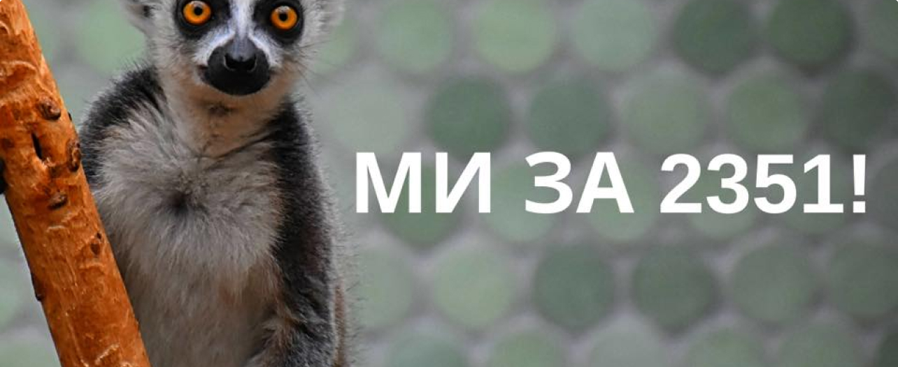

20.03.2020
Давайте запустимо хвилю гуманності!

Дуже багато місяців український парламент ніяк не може розглянути важливий зоозахисний законопроєкт 2351. UAnimals та МФО "Гуманна країна" підтримують ініціативу.
Пропонуємо запустити хвилю гуманності та затегати в коментарях депутатів із закликом винести на голосування і прийняти законопроєкт 2351. Нагадуємо, чому це важливо:
🚫 Законопроект № 2351 забороняє:
- контрабанду диких тварин;
- пропаганду жорстокого поводження з тваринами;
- фотографування з дикими тваринами в населених пунктах;
- жебракування з тваринами;
- залишати тварин в салоні автомобілю при температурі навколишнього середовища, вищій, ніж +20ºС та нижчій, ніж -5ºС
💪 підсилює:
- кримінальну та адміністративну відповідальність за жорстоке поводження з тваринами;
- заходи по боротьбі з браконьєрством;
- права місцевих рад з питань захисту тварин від жорстокого поводження;
🆕 вводить:
- адміністративну відповідальність за жорстоке або безвідповідальне поводження з тваринами з 16 років;
- кримінальну відповідальність за жорстоке або безвідповідальне поводження з тваринами з 14 років;
- можливість тимчасового вилучення тварин (при жорстокому поводженні з ними) поліцією до розгляду справи в суді;
- конфіскацію тварини при жорстокому поводженні з нею;
- озбавлення права особи яка вчинила жорстоке поводження з твариною утримувати тварин протягом п’яти років
- обов’язок проведення експертизи для встановлення причин смерті тварини;
- відповідальність за протидію законній діяльності громадських активістів.
Просимо поширити!